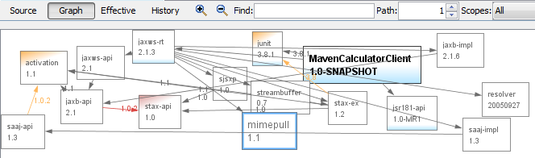

Ferramentas de Compilação

Clique na imagem para exibição em tela inteira
{kind=link}
Assuma o controle de sua compilação onde seu código estiver, com ferramentas padrão de compilação integradas ao IDE.
Maven
O NetBeans IDE suporta o sistema de compilação Maven para ajudá-lo a gerenciar dependências de projeto, compilações, relatórios e documentação. Abra, compile, execute, depure, crie perfis e implante projetos existentes do Maven, que podem ser abertos sem um procedimento de importação. Assistentes são fornecidos para criar novas aplicações com base nos Arquétipos de Maven existentes. O browser Maven Repository permite procurar o conteúdo do repositório local e dos repositórios remotos registrados existentes. Gráficos mostram dependências diretas e transitórias e identificam conflitos de versão.
{kind=link}
Ant
O sistema de projetos default do NetBeans IDE foi criado diretamente sobre o sistema de compilação Ant. Todos os comandos do projeto, como "Compilar Projeto" e "Executar Arquivo no Depurador", chamam alvos no script Ant do projeto. Portanto, é possível construir e executar um projeto fora do IDE, exatamente como é construído e executado dentro do IDE.
Não é necessário conhecer bem o Ant para trabalhar com aplicações IDE. É possível definir todas as opções básicas de compilação e runtime na caixa de diálogo Propriedades do projeto no projeto e o IDE atualiza automaticamente o script do Ant do projeto. Se você souber como trabalhar com Ant, poderá personalizar um script de Ant do projeto diretamente ou escrever seu próprio script Ant para o projeto.
Configuração Avançada de Projetos de Forma Livre
Gradle
A comunidade oferece um plug-in para Gradle, o sistema de compilação baseado em Groovy. O plug-in permite abrir projetos Gradle no IDE, criar novos projetos Gradle e chamar comandos do Gradle no IDE.
Plug-in do GradleO Guia Definitivo do Gradle para NetBeans IDE
Consulte Também
- Página de Release do NetBeans IDE 8.1 para obter uma lista de funcionalidades específicas da última versão estável.
- Trilha de Aprendizado em Desenvolvimento Geral de Java para tutoriais que o ajudarão a começar.